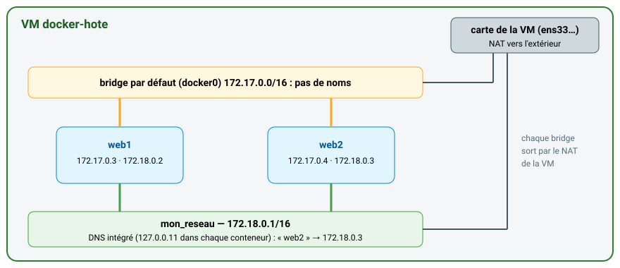

Les réseaux Docker¶
Résumé
Chaque conteneur a sa propre carte réseau et sa propre adresse IP. Mais sur quel réseau ? Ce TP explore les réseaux de Docker du point de vue d'un administrateur réseau : le bridge par défaut, où les conteneurs ne se trouvent pas par leur nom, puis un bridge personnalisé, où ils se trouvent grâce à un DNS intégré. On isole des services en les mettant sur des réseaux séparés.
On essaie ensuite les modes host (le conteneur partage la carte réseau de la VM), none (aucun réseau) et macvlan (le conteneur apparaît comme une vraie machine sur le réseau local). On termine par une surprise qui piège beaucoup d'administrateurs : les ports publiés par Docker contournent le pare-feu de la machine.
| Propriété | Valeur |
|---|---|
| Difficulté | Intermédiaire |
| Durée estimée | 2 h |
| Version décrite | Docker Engine 29.10, nginx 1.31 |
| Place dans le parcours | Partie 7 sur 17 du parcours Docker — jour 2 |
| Dernière mise à jour | 2026-11-24 |
Convention de lecture
🖥️ PC hôte · 🐧 VM docker-hote, connecté en tssr · 📦 dans un conteneur · ✍️ exercice. Suite de la partie 6 : seul portainer tourne.
1. Les réseaux créés par Docker¶
🐧 Lister les réseaux de Docker :
NETWORK ID NAME DRIVER SCOPE
0e400028062e bridge bridge local
ddb20127b014 host host local
daa08a4d4af5 none null local
Docker crée trois réseaux à son installation. La colonne DRIVER (pilote) indique le type de réseau :
| Pilote | Ce qu'il fait | Utilisé par défaut ? |
|---|---|---|
bridge |
Un commutateur virtuel dans la VM, sur lequel on branche des conteneurs ; Docker fait du NAT vers l'extérieur | Oui : tout conteneur lancé sans --network |
host |
Pas d'isolation : le conteneur utilise directement la carte réseau de la VM | Non |
null (réseau none) |
Aucune carte réseau, à part la boucle locale | Non |
macvlan |
Le conteneur reçoit sa propre adresse MAC et une adresse IP du réseau local | Non, à créer |
overlay |
Un réseau qui s'étend sur plusieurs serveurs Docker (cluster Swarm, partie 16) | Non, à créer |
🐧 Le réseau bridge correspond à une carte réseau de la VM, docker0, qui sert de passerelle aux conteneurs :
ip -br a show docker0
docker network inspect bridge --format '{{range .IPAM.Config}}{{.Subnet}} {{.Gateway}}{{end}}'

Chaque réseau bridge est un commutateur virtuel dans la VM, avec son propre sous-réseau.
2. Le bridge par défaut : pas de noms¶
-
🐧 Lancer deux serveurs web, sans préciser de réseau :
-
🐧 Depuis
web1, essayer de joindreweb2par son nom (l'image nginx contient la commandecurl) :Aucune page, et un code d'erreur :
web1ne sait pas où estweb2. Faute de connaître ce nom, la question part vers le DNS de la VM, qui ne le connaît pas non plus, etcurlabandonne au bout des 3 secondes (-m3) ; le code 28 decurlsignifie « délai dépassé ». -
🐧 Essayer avec son adresse IP :
docker inspect -f '{{.NetworkSettings.Networks.bridge.IPAddress}}' web2 docker exec web1 curl -s -m3 http://172.17.0.4 | grep title(remplacer
172.17.0.4par l'adresse affichée). Par l'adresse, ça marche : les deux conteneurs sont bien sur le même réseau.
Sur le bridge par défaut, les conteneurs se joignent seulement par adresse IP. Or ces adresses changent quand on recrée un conteneur : impossible de s'en servir dans une configuration durable (« le serveur web parle à la base de données en 172.17.0.5 »…).
3. Un bridge personnalisé : les noms fonctionnent¶
3.1 Créer un réseau et y brancher des conteneurs¶
-
🐧 Créer un réseau
mon_reseau(pilotebridgepar défaut) :docker network create mon_reseau docker network inspect mon_reseau --format '{{.Driver}} {{range .IPAM.Config}}{{.Subnet}} {{.Gateway}}{{end}}'Docker a choisi tout seul le sous-réseau suivant,
172.18.0.0/16. -
🐧 Brancher les deux conteneurs existants sur ce réseau, comme on brancherait un second câble à une machine :
-
🐧 Réessayer par le nom :
Cette fois,
web2est trouvé, à son adresse surmon_reseau.
3.2 Le DNS intégré de Docker¶
🐧 Regarder le serveur DNS utilisé par web1 :
(grep -v '^#' masque les lignes de commentaire écrites par Docker). Sur le bridge par défaut, ce même fichier contient simplement les serveurs DNS de la VM.
Sur un réseau personnalisé, Docker fournit à chaque conteneur un serveur DNS interne, à l'adresse 127.0.0.11 : une adresse de boucle locale dans chaque conteneur, que Docker intercepte. Il répond avec les noms des conteneurs branchés sur le même réseau, et transmet les autres questions (debian.org…) au DNS de la VM.
🐧 Un conteneur créé directement sur le réseau est trouvé aussi :
docker run -d --name app --network mon_reseau nginx
docker run --rm --network mon_reseau debian:13 getent hosts app
La règle à retenir
Pour que des conteneurs se parlent, on les met sur un réseau personnalisé commun et on utilise leurs noms. C'est exactement ce que fera Docker Compose en partie 8, automatiquement.
3.3 Isoler des services¶
🐧 Débrancher web2 de mon_reseau, puis réessayer :
Le code 28 de curl signifie « délai dépassé » : web1 ne peut plus joindre web2 par mon_reseau. Deux conteneurs qui ne partagent aucun réseau personnalisé ne se voient pas par leur nom. On s'en sert pour cloisonner : un serveur web et sa base de données sur un réseau, un autre site et sa base sur un autre, sans que l'un puisse joindre la base de l'autre. C'est le principe de la segmentation réseau, appliqué aux conteneurs.
Et le bridge par défaut ?
web1 et web2 sont toujours tous les deux sur le bridge par défaut, où ils se joignent par adresse IP. C'est une raison de plus de ne pas l'utiliser pour des services sérieux : tout conteneur lancé sans --network y atterrit et peut joindre tous les autres.
3.4 Choisir le sous-réseau et l'adresse¶
🐧 Le sous-réseau d'un réseau personnalisé peut être imposé, par exemple pour éviter un conflit avec un réseau de l'entreprise, et un conteneur peut y recevoir une adresse fixe :
docker network create --driver bridge --subnet=192.168.100.0/24 mon_reseau_perso
docker run --rm --network mon_reseau_perso --ip 192.168.100.50 debian:13 hostname -I
Attention aux conflits d'adresses
Docker pioche ses sous-réseaux dans 172.17.0.0/16 à 172.31.0.0/16, puis dans 192.168.0.0/16. Si le réseau de l'entreprise ou un VPN utilise déjà l'une de ces plages, les machines concernées deviennent injoignables depuis la VM : les paquets partent vers le réseau Docker au lieu de la bonne route. C'est un incident classique, qu'on évite en choisissant les plages de Docker (--subnet, ou le réglage default-address-pools de Docker).
🐧 Nettoyer :
4. Les modes host et none¶
4.1 host : pas d'isolation réseau¶
🐧 Un conteneur en mode host voit les cartes réseau de la VM et porte son nom de machine :
docker-hote
Inter-| Receive | Transmit
face |bytes packets errs drop fifo frame compressed multicast|bytes packets errs drop fifo colls carrier compressed
lo
enp1s0
docker0
vethf27f806
On retrouve enp1s0 (la carte de la VM), docker0 et une carte veth… (la moitié côté VM du « câble virtuel » d'un autre conteneur en marche, ici Portainer).
Pas de publication de port en mode host : un nginx lancé avec --network host écoute directement sur le port 80 de la VM. C'est un peu plus rapide (pas de NAT), et utile pour des outils qui doivent voir tout le trafic de la machine (supervision réseau…). Mais le conteneur n'est plus isolé du réseau de la VM : à réserver aux cas où c'est indispensable.
4.2 none : aucun réseau¶
🐧 En mode none, le conteneur n'a que sa boucle locale lo :
Inter-| Receive | Transmit
face |bytes packets errs drop fifo frame compressed multicast|bytes packets errs drop fifo colls carrier compressed
lo: 0 0 0 0 0 0 0 0 0 0 0 0 0 0 0 0
Utile pour un traitement qui ne doit jamais communiquer : conversion de fichiers, calcul, analyse d'un fichier suspect…
5. Le mode macvlan : une vraie machine sur le réseau¶
Avec macvlan, le conteneur obtient sa propre adresse MAC et une adresse IP du réseau local, comme s'il était branché directement sur le commutateur. Pas de NAT ni de publication de port : les autres machines du réseau le joignent directement.
5.1 Préparer l'hyperviseur¶
La carte réseau de la VM va émettre des trames avec plusieurs adresses MAC (la sienne et celles des conteneurs). Par sécurité, les hyperviseurs les bloquent souvent : il faut autoriser le mode promiscuité sur la carte de la VM.
🖥️ Selon l'hyperviseur :
Workstation n'a pas de case « promiscuité » dans les réglages de la carte réseau : sur un PC Windows, il n'y a en général rien à régler. Si le conteneur macvlan reste injoignable depuis le PC, vérifier que la VM est bien sur VMnet8, et refaire l'essai depuis une autre VM du même réseau.
VM éteinte : Configuration > Réseau > Carte 2 (le réseau privé hôte), section Avancé, Mode promiscuité : Tout autoriser. La carte parente sera alors enp0s8, sur le réseau 192.168.56.0/24.
5.2 Créer le réseau macvlan¶
-
🐧 Repérer la carte de la VM, son adresse et sa passerelle :
-
🐧 Créer le réseau macvlan. On réserve aux conteneurs une petite plage de 8 adresses libres, choisie en dehors de la plage du DHCP de l'hyperviseur, pour ne jamais voler l'adresse d'une autre machine :
Carte
ens33(le nom peut varier), réseau VMnet8192.168.x.0/24, passerelle192.168.x.2, DHCP de.128à.254. Plage réservée :192.168.x.96à192.168.x.103. Remplacerxpar le troisième octet de son réseau :Carte
enp0s8(la seconde, réseau privé hôte), réseau192.168.56.0/24, DHCP à partir de.101. Ce réseau n'a pas de routeur : on indique le PC (.1) comme passerelle. Plage réservée :192.168.56.48à192.168.56.55:Option Rôle -d macvlanPilote macvlan --subnet,--gatewayLe réseau local et sa passerelle (les mêmes que la VM) --ip-range=…/29Docker ne distribuera que ces 8 adresses -o parent=…La carte de la VM sur laquelle se greffent les conteneurs --ipL'adresse fixe du conteneur, prise dans la plage réservée -
🐧 Vérifier l'adresse et l'adresse MAC du conteneur :
docker inspect -f '{{range .NetworkSettings.Networks}}{{.IPAddress}} {{.MacAddress}}{{end}}' web-macvlan(exemple : l'adresse est celle choisie, et l'adresse MAC est tirée au hasard par Docker).
5.3 Tester depuis le PC… et depuis la VM¶
- 🌐 Depuis le PC, ouvrir
http://suivi de l'adresse choisie pour le conteneur : la page de nginx s'affiche, sans aucun port publié. 🖥️ Le PC a appris l'adresse MAC du conteneur comme celle de n'importe quelle machine :arp -adans PowerShell la montre. -
🐧 Depuis la VM, essayer la même adresse :
Échec : c'est une limite connue de macvlan. Pour des raisons de conception du noyau Linux, la machine hôte ne peut pas joindre ses propres conteneurs macvlan, même si tout le reste du réseau le peut.
Quand utiliser macvlan ?
Pour un service qui doit apparaître comme une machine à part entière sur le réseau local : un serveur DHCP ou DNS conteneurisé, un outil qui découvre les équipements du réseau, une application qui a besoin de son propre nom et de sa propre adresse. Pour un site web classique, un bridge et un port publié (ou un reverse proxy, jour 3) suffisent et sont plus simples.
🐧 Nettoyer :
🖥️ Sous VirtualBox, VM éteinte, remettre le Mode promiscuité de la carte 2 sur Refuser : on ne laisse pas une carte en promiscuité sans raison.
6. Docker et le pare-feu¶
6.1 Publier un port seulement en local¶
🐧 Par défaut, -p 8085:80 publie sur toutes les adresses de la VM. On peut limiter à une seule adresse, par exemple la boucle locale, pour un service qui ne doit être joignable que depuis la VM :
docker run -d --name prive -p 127.0.0.1:8085:80 nginx
docker ps --filter name=prive --format '{{.Ports}}'
curl http://localhost:8085 fonctionne dans la VM ; 🌐 http://IP-de-la-VM:8085 échoue depuis le PC.
6.2 Les ports publiés contournent le pare-feu¶
Pour publier un port, Docker écrit lui-même des règles de NAT dans le pare-feu du noyau (iptables, ici sur sa variante nftables) :
-N DOCKER
-A DOCKER ! -i docker0 -p tcp -m tcp --dport 9443 -j DNAT --to-destination 172.17.0.2:9443
-A DOCKER -d 127.0.0.1/32 ! -i docker0 -p tcp -m tcp --dport 8085 -j DNAT --to-destination 172.17.0.3:80
Chaque port publié devient une règle DNAT (traduction d'adresse de destination), comme une redirection de port sur un routeur. Le paquet est redirigé vers le conteneur dès son arrivée, avant d'atteindre les règles qui protègent la VM elle-même (la chaîne INPUT, celle qu'utilise UFW) : il est routé vers le conteneur, pas reçu par la VM.
UFW et Docker : un piège classique
Sur une machine protégée par UFW (ou firewalld), un administrateur bloque le port 8080 avec ufw deny 8080, puis lance docker run -p 8080:80 …. Le port est quand même joignable depuis l'extérieur : le paquet est redirigé vers le conteneur sans jamais passer par les règles d'UFW. La documentation de Docker le signale explicitement.
Les bonnes pratiques :
- ne publier que les ports nécessaires, et les limiter à une adresse (
-p 127.0.0.1:…) quand ils ne servent qu'en local ; - mettre les services derrière un reverse proxy (jour 3), qui seul publie les ports 80 et 443 ;
- filtrer, si besoin, dans la chaîne
DOCKER-USER, que Docker réserve aux règles de l'administrateur et qu'il ne modifie jamais ; - protéger le serveur par un pare-feu réseau en amont (pfSense, OPNsense…), qui ne dépend pas de la machine.
🐧 Nettoyer :
7. Synthèse¶
| Type de réseau | Communication | Isolation | Cas d'utilisation |
|---|---|---|---|
| Bridge par défaut | Entre conteneurs, par adresse IP seulement | Partielle | Essais rapides |
| Bridge personnalisé | Entre conteneurs du même réseau, par leur nom | Oui, par réseau | Le cas général : une application à plusieurs conteneurs |
| Host | Utilise directement le réseau de la VM | Non | Performances, outils de supervision réseau |
| None | Aucune | Totale | Traitements qui ne doivent pas communiquer |
| Macvlan | Le conteneur est une machine du réseau local | Partielle | Services qui ont besoin de leur propre adresse sur le réseau |
| Overlay | Entre conteneurs de plusieurs serveurs | Oui | Cluster Swarm (partie 16) |
8. Exercice¶
✍️ Créer deux réseaux, front et back. Lancer un conteneur bdd (image mariadb:11.8, mot de passe root TutoDocker2026!) sur back seulement, et un conteneur web (image nginx) sur front et back. Lancer enfin un conteneur jetable intrus sur front seulement. Vérifier que web résout le nom bdd, et que intrus, lui, ne le résout pas.
Réponse
docker network create front
docker network create back
docker run -d --name bdd --network back -e MARIADB_ROOT_PASSWORD='TutoDocker2026!' mariadb:11.8
docker run -d --name web --network front nginx
docker network connect back web
docker exec web getent hosts bdd # répond : 172.x.x.x bdd
docker run --rm --name intrus --network front debian:13 getent hosts bdd; echo "code=$?" # rien, code=2
web, branché sur les deux réseaux, joint la base ; intrus, seulement sur front, ne la trouve même pas. C'est le schéma classique : le serveur web est exposé, la base de données est cachée derrière lui. Nettoyer ensuite : docker rm -f bdd web puis docker network rm front back.
9. Vérifier son lab¶
Vérifier son lab
🐧 Ce test crée un réseau personnalisé, y lance un conteneur et le résout par son nom :
docker network create verif-net
docker run -d --name cible --network verif-net nginx
docker run --rm --network verif-net debian:13 getent hosts cible
docker rm -f cible; docker network rm verif-net
Résultat attendu : une ligne 172.x.x.x cible (l'adresse dépend du sous-réseau choisi par Docker), puis cible et verif-net.
10. Questions de révision¶
- Pourquoi deux conteneurs sur le bridge par défaut ne se trouvent-ils pas par leur nom ? Comment y remédier ?
- À quelle adresse se trouve le DNS intégré de Docker ? Que sait-il résoudre ?
- Comment empêcher un conteneur
webd'atteindre la base de données d'une autre application ? - Quelle est la différence entre
-p 8080:80et-p 127.0.0.1:8080:80? - Un administrateur bloque le port 8080 avec UFW, mais un conteneur publié sur ce port reste joignable. Pourquoi ? Que faire ?
- Un conteneur macvlan est joignable depuis le PC, pas depuis la VM qui l'héberge. Est-ce une panne ?
Corrigé
- Le bridge par défaut n'a pas de résolution de noms entre conteneurs. Il faut créer un réseau personnalisé (
docker network create) et y brancher les conteneurs : ils s'y trouvent alors par leur nom. - En
127.0.0.11, dans chaque conteneur branché sur un réseau personnalisé. Il résout les noms des conteneurs du même réseau, et transmet les autres noms au DNS de la machine. - En ne les mettant sur aucun réseau commun : chaque application a son propre réseau pour sa base de données. Sans réseau partagé, le nom ne se résout pas et l'adresse n'est pas joignable, à condition qu'aucun des deux ne soit aussi sur le bridge par défaut (c'est le cas avec Docker Compose, qui ne s'en sert pas).
-p 8080:80publie le port sur toutes les adresses de la VM (joignable depuis le réseau) ;-p 127.0.0.1:8080:80le publie seulement sur la boucle locale : joignable uniquement depuis la VM elle-même.- Docker écrit ses propres règles de NAT (DNAT), traitées avant les règles de filtrage d'UFW. Il faut publier le moins de ports possible, les limiter à une adresse, passer par un reverse proxy, filtrer dans la chaîne
DOCKER-USER, et compter sur un pare-feu réseau en amont. - Non : c'est une limite connue de macvlan. L'hôte ne peut pas joindre ses propres sous-interfaces macvlan, alors que toutes les autres machines du réseau le peuvent.
Ressources¶
- Docker — Vue d'ensemble des réseaux — les pilotes et leur fonctionnement (en anglais).
- Docker — Le pilote bridge — différences entre bridge par défaut et personnalisé.
- Docker — Le pilote macvlan — création et limites.
- Docker — Filtrage des paquets et pare-feu — Docker, iptables, UFW et la chaîne
DOCKER-USER. - Partie précédente : Sauvegarder un conteneur sous forme d'image · Partie suivante : Docker Compose : Nextcloud en une commande.